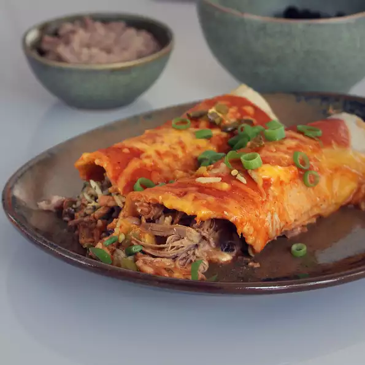

Tequila Slow-Cooked Beef Enchiladas

Description
I get requests for this recipe all the time! I have made
it with chicken and leftover Thanksgiving turkey as well, but beef is my favorite!
Ingredients
- 1 (3 pound) beef roast
- 3 cups tequila
- 3 jalapeno peppers, seeded and diced
- 6 cloves garlic, smashed and diced
- 3 cups uncooked rice
- 2 (15 ounce) cans black beans, rinsed and drained
- 1 (16 ounce) can refried beans
Steps
- Combine beef roast, tequila, jalapeno peppers,
and garlic in a slow cooker. Cover and cook on Low until tender, 12 to 18 hours.
- Shred beef using 2 forks; let it cool, about 30 minutes.
Transfer shredded beef to a plate using a slotted spoon,
reserving cooking liquid in the slow cooker.
- Pour reserved cooking liquid into a large pot; stir in rice.
Bring to a boil. Reduce heat to medium-low, cover,
and simmer until rice is tender and liquid has been absorbed, 20 to 25 minutes.
- Preheat oven to 350 degrees F (175 degrees C).